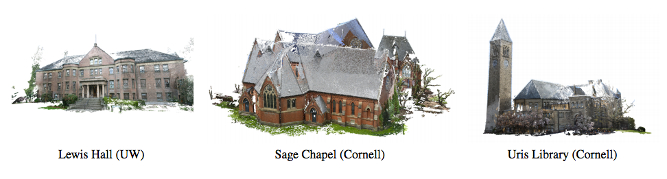

PhotoCity
PhotoCity was a “game with a purpose” that aimed to reconstruct the world in 3D.
The purpose of PhotoCity was to encourage people to take photos of buildings from all angles, so that these unusual angles could be fed into an algorithm and used to reconstruct those buildings in 3D. Though photos of a building can be downloaded from photo-sharing sites like Flickr, these sites are unlikely to have all the photos needed for full 3D reconstruction.
I performed user studies to improve the game design and UX of PhotoCity, and programmed the PhotoCity website using HTML, CSS, PHP, Javascript, and SQL.

Part of the PhotoCity game map
PhotoCity Competitions
I designed and programmed a separate PhotoCity website specialized for competitions and events, such as the 2010 Smithsonian Folklife Festival. The results of this and other competitions was used for a paper published in CHI 2011, titled PhotoCity: training experts at large-scale image acquisition through a competitive game.
Campus buildings at the University of Washington and Cornell, reconstructed in detail during the PhotoCity competition. (Archive)
Over the course of a 6-week game, 45 players submitted over 109,000 photos. About 68,000 photos of those photos successfully contributed to a building model, amounting to an average of around 1500 photos submitted per player. Despite its small player base, players were trained through gameplay to make efficient and massive contributions to recreating the world in 3D.

A building reconstructed with PhotoCity
Player PhotoCity Strategies
“Targetting buildings without huge slabs of glass/windows works best. Buildings that have plain facades are tough to get points on. Buildings with stone exteriors, especially rough hewn stone, have tonnes of points. Brick buildings can give lots of points if the grout is especially thick.”
“I’ve been trying to work out my corner strategy, and mostly it consists of taking a lot of pictures of that corner from a lot of angles.”
“The third strategy was to try and approximate the time of day and the lighting that some pictures were taken; this would help prevent rejection by the game. With that said, cloudy days were the best by far when dealing with corners because less contrast helped the game figure out the geometry from my pictures.”
“When it was sunny, I utilized my camera’s anti-shake features to allow myself to take photos while walking around a particular zone. This allowed me to take crisp photos while not having to stop my stride. Also bonus: less people stared at me!”